Concept of Long Term Storage (LTS)
You can archive project data (values, events, activities, incidents) in the Long Term Storage (LTS).
A project can have several archive groups. You can define settings for each archive group separately, whether the data is written to the Short Term Storage (STS) or the Long Term Storage (LTS) (see Configuring History Database in System Browser). Each LTS can have one or more LTS slices. You cannot edit or delete data in the LTS. You can only add data.
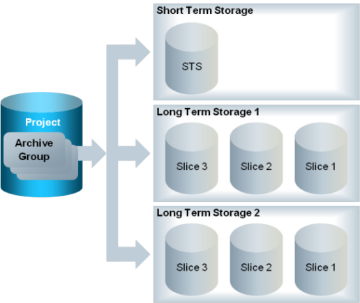
Working of Archiving Data in the Long Term Storage
1 | Data flows to the STS and either stays there or flows to the current LTS slice. An empty spare LTS slice is ready if the current LTS slice fills up. | 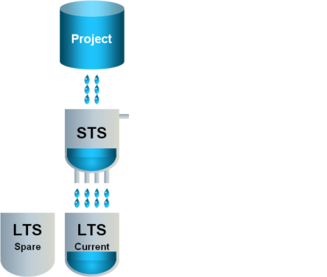 |
2 | When the current LTS slice is full… | 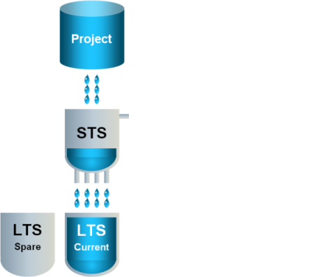 |
3 | …the current LTS slice is closed for writing and the spare LTS slice becomes the active LTS slice. | 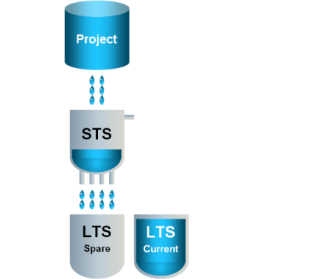 |
4 | A new empty spare LTS slice is created. | 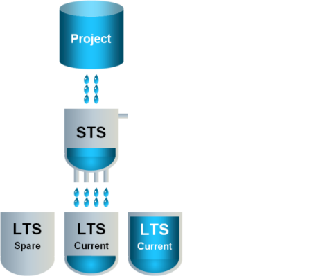 |
5 | The former current LTS slice becomes the final LTS slice. The final LTS slice can be saved as a backup. | 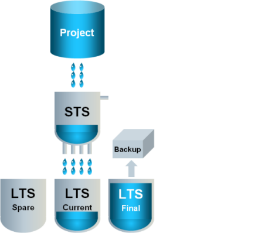 |
6 | With time, multiple final LTS slices and backups can accumulate. | 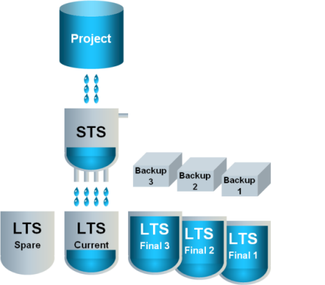 |
7 | Only a defined number of final LTS slices remain available, with the oldest final LTS slice being deleted. The backups remain. | 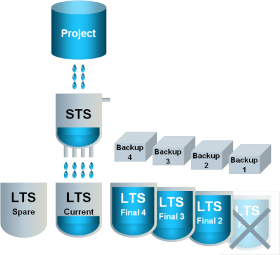 |
8 | To read data from a backup, you can restore a backup. This is called a mounted LTS slice. | 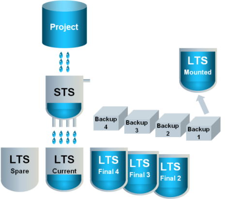 |
STS and LTS Principle
Number of Storage Slices
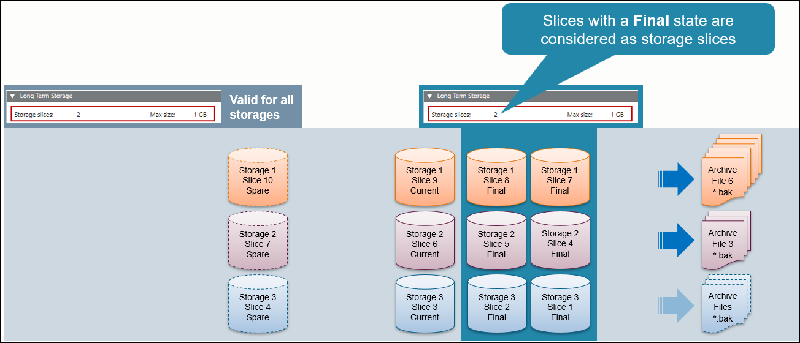
Online Data and Offline Data with Mounting Function
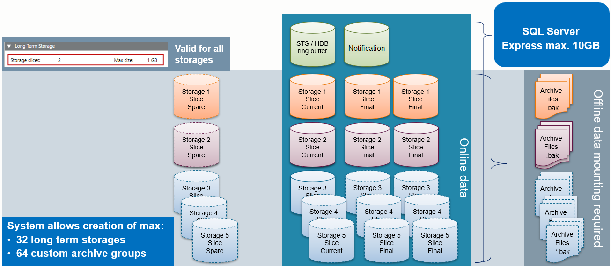

NOTE:
For additional information about SQL licenses refer to Microsoft documentation.
HDB Backup Performed in SMC or Management Station
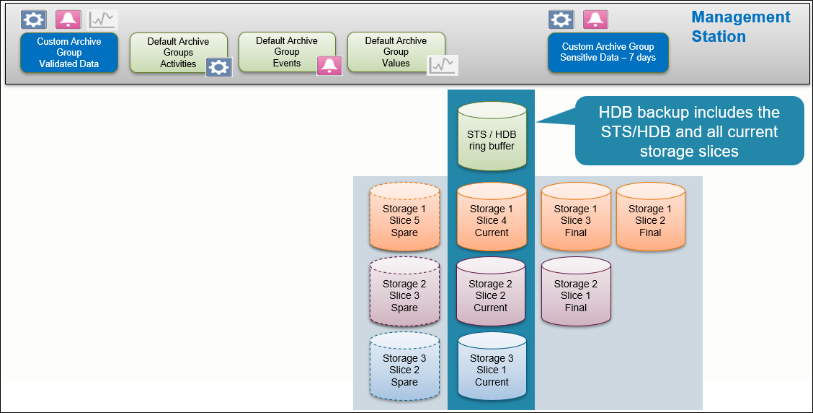
Writing and Reading Process
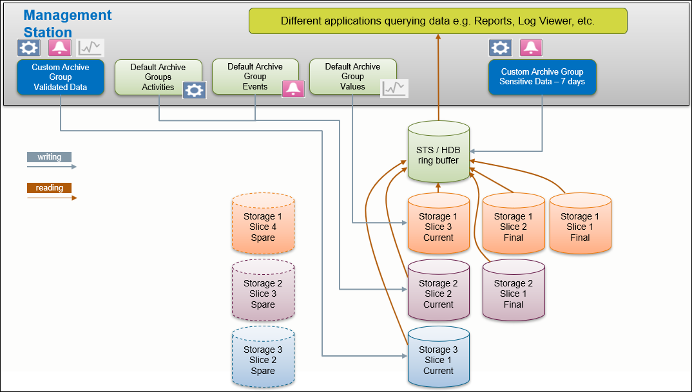
Project Essentials
New Projects
The planned archiving concept (STS and/or LTS) can be set up before or after starting recording.
Data records will be stored through the archive group to the assigned STS or storage(s) in LTS.
Per default any archive group (default and customs) is assigned to the STS/HDB.
After an HDB Upgrade from Version 2.x
Following is the recommended workflow for upgrading HDB and projects.
Scenario: In the V2.x project the deletion schedule is enabled and the settings for min and max retention span are set correctly for all archive groups according to the project request, so that no records will be deleted after project upgrade.
- Restore the HDB backup and execute an upgrade.
- HDB size and T-Log size are the same as in the V2.x project. Change the size of HDB (if possible).
- Create the number of storages, slices, and define the size (if possible) now or later at runtime.
- Restore the project, execute an upgrade, and link the HDB to the project prior to starting the project.
- Assign the default archive groups and the newly created custom archive groups to the LTS storages or STS/HDB. In case STS is used, enable the deletion feature and set up retention times and periods.
LTS Configuration
At the moment an archive group is assigned to a storage in LTS, new records will be written directly only to the current storage slice and the existing samples in STS from this archive group will be moved from the STS to the assigned storage in LTS. This is a non-reversible task. Depending on the amount of samples in the STS/HDB, this process might require several hours. Typically this is a very fast operation.
NOTE 1:
When changing the allocation from an existing LTS storage assignment to another LTS storage or when reallocating an assignment back to the STS/HDB, the data in the previous LTS storage is not moved.
NOTE 2:
In Desigo CC Version 3.0, manually mounted archive files remain mounted, unless they are dismounted manually.
Requirements Before Configuring the History Database
Before configuring the History Database you need to create an archiving concept in accordance with the customer’s requirements. You need to define the following as a part of this process:
- Number of slices and size per slice.
- Number of storages and time slicing intervals.
- Required number of custom archive groups (license) for example, validated objects, energy/power reporting, sensitive data only saved for limited period, and so on.
- Defining number of HDBs (distributed system) for larger projects.
Following are the requirements for the above mentioned definitions:
- Using the dimensioning/sizing tool to support the estimation/calculation.
- Estimating the number of samples per day, month and year for each archive and custom archive group.
- Knowing/estimating the retention times for each archive and custom archive group.
- Calculating the data volume using Values and Data Capacity Settings for more precise results.